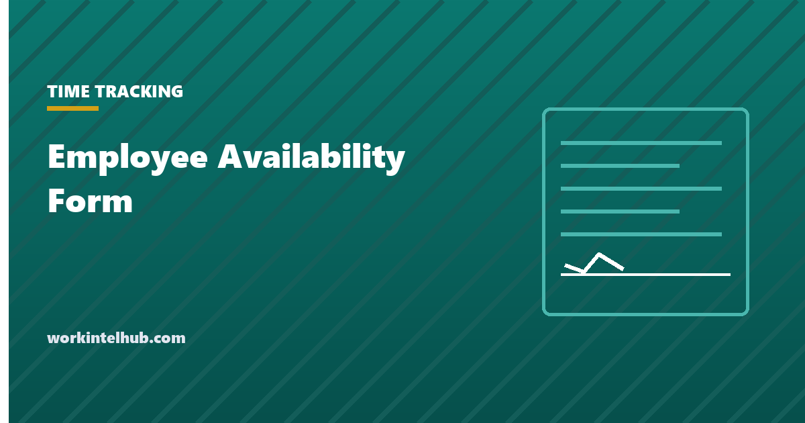

Employee Availability Form

An employee availability form records the days and hours an employee can work, their maximum hours per week, and any fixed commitments the schedule has to work around. It is the input to the schedule; a schedule built without it is a draft that gets rewritten in swap requests.
The generator below produces the completed form. The sections after it cover what the form should ask, what it should not, and how to keep it current, which is where most availability systems fail.
Availability form generator
| Day | Available from | Until | Not available |
|---|
The generated text is the form as the employee would submit it, with the acknowledgment lines. Nothing typed here leaves your browser.
What to ask
- Hours available each day, as a range, not a yes or no. "Tuesday 16:00 to 23:00" schedules; "Tuesday: yes" does not.
- Maximum hours per week, and whether the employee wants to reach it. Someone available 50 hours who wants 20 is a different resource from someone who wants 40.
- Fixed commitments with their pattern: classes on a term calendar, a second job's shifts, childcare pick-up times. These are the constraints that break schedules when they are missing.
- Dates already known to be unavailable in the next three months.
- An effective date and a change rule. The form should say how much notice a change needs; two weeks matches the scheduling horizon.
What not to ask
The form asks about time, not reasons. "Not available Sunday mornings" is enough; the form should not ask why, because the answer is frequently religious observance, a disability-related appointment, or a family obligation, and a form that collects those reasons collects protected information the employer would then have to show it did not use. Where a reason matters, because the employee is asking for an accommodation rather than stating a preference, that conversation belongs with HR and the attendance policy's accommodation route, not on a scheduling form.
The form also should not imply that availability guarantees hours, or that limited availability is held against the employee. The acknowledgment line in the generator says so explicitly. In predictive scheduling jurisdictions, an employee's right to decline hours outside their stated availability is part of the law.
The form, as plain text
If you would rather paste the fields into your own document, the form has five parts: identity (name, role, effective date, maximum weekly hours); a seven-row weekly grid with "available from", "until" and "not available" for each day; fixed commitments with their pattern; known unavailable dates for the next three months; and an acknowledgment that the availability is accurate, that changes need two weeks' notice, and that availability is a factor in scheduling but not a guarantee of hours, signed by the employee and initialled by whoever received it. The generator produces exactly that text with the weekly hours totalled, which is the number the schedule builder needs.
Keeping it current, and using it
- Collect it at hire and re-collect it twice a year, plus whenever the employee tells you something changed. Student availability changes every term.
- Store it where the scheduler sees it. A form in a personnel file is not used. The schedule builder takes maximum hours per person directly.
- Treat it as a constraint, not a promise. Availability says when a person can work. It does not say they will be scheduled, and it does not say they cannot be asked outside it; it says asking outside it is a request they can refuse.
- Watch for availability shrinking. An employee whose available hours halve without explanation is usually job-hunting, and the stay interview questions are the response.
Key takeaways
- An availability form records hours per day as ranges, maximum weekly hours, fixed commitments and known unavailable dates, with an effective date.
- Ask about time, not reasons. Reasons for unavailability are often protected information the employer should not hold on a scheduling form.
- State that availability does not guarantee hours and that limited availability is not held against the employee.
- Re-collect at hire, twice a year and on change. Keep it where the scheduler can see it.
- Availability is a constraint the employee can enforce, not a promise of hours. Shrinking availability is often an early resignation signal.
Frequently asked questions
What is an employee availability form?
A form on which an employee states the days and hours they can work, the maximum hours they want per week, fixed commitments the schedule must work around, and dates they already know they are unavailable. It is the input to building the schedule.
What should an availability form include?
Available hours for each day of the week as a time range, maximum weekly hours, fixed commitments such as classes or a second job, known unavailable dates, an effective date, the notice required for changes, and a signed acknowledgment that availability does not guarantee hours.
Can an employer ask why an employee is unavailable?
It is better not to on the form. Reasons are frequently religious, medical or family-related, which are protected categories, and collecting them creates a record the employer must then show it did not rely on. Where an accommodation is being requested, handle it through HR rather than the scheduling form.
Does availability guarantee hours?
No, and the form should say so. Availability sets when an employee can be scheduled. Hours depend on demand and the schedule. Equally, an employee can normally decline shifts outside their stated availability, and in predictive scheduling jurisdictions that right is written into the law.
How often should availability be updated?
At hire, at least twice a year, and whenever the employee reports a change, with two weeks' notice for changes to match the scheduling horizon. Students' availability changes every term and should be re-collected then.